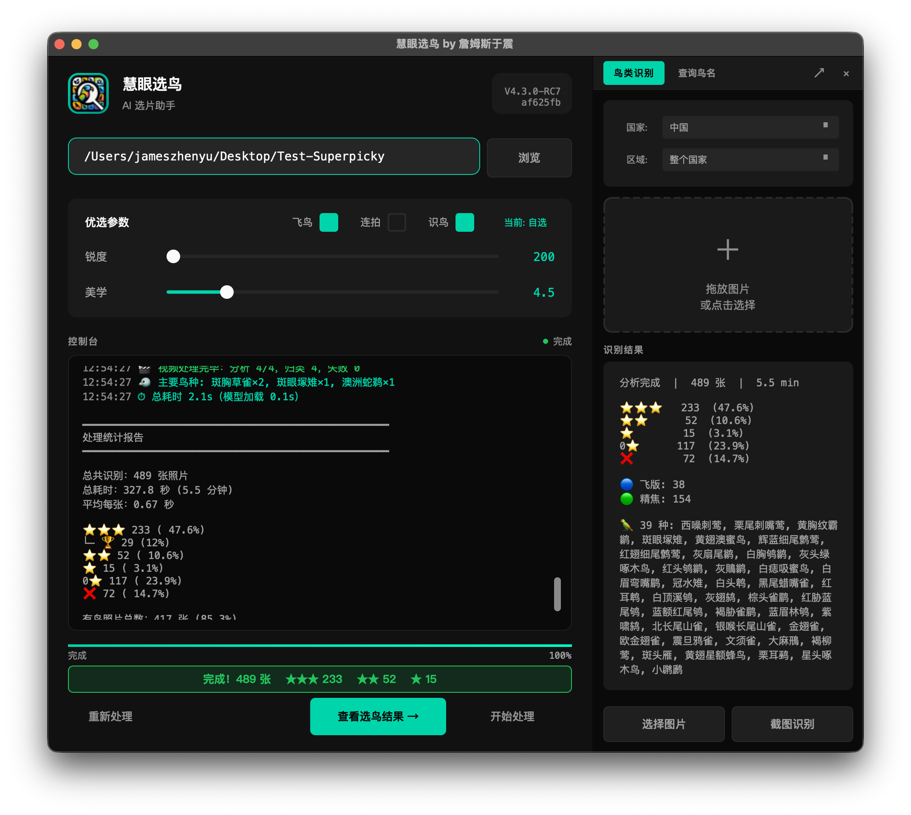
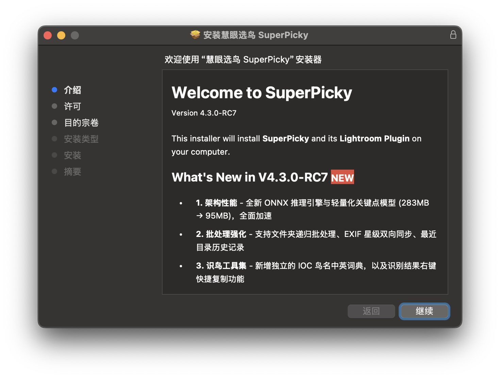
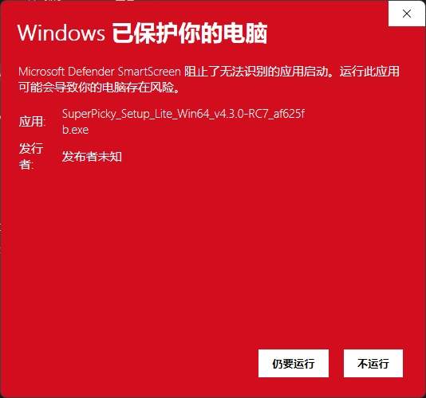
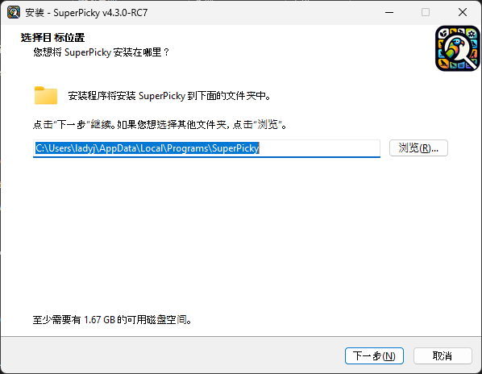
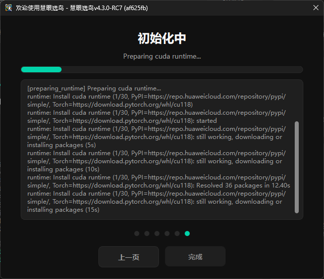

软件是什么、能帮你做什么，以及如何完成安装和首次启动。
拍鸟的人都知道，一次出行拍几百上千张是常事。选片通常是最枯燥的环节——逐张翻看、判断锐度、删掉废片，往往比拍摄本身花的时间还长。
SuperPicky 慧眼选鸟就是为了解决这个问题。它是一款面向鸟类摄影师的 AI 自动选片工具，核心工作流程是：
4.3.0 版本在此基础上新增了两项功能：基于 GBIF 全球观察数据的罕见度评分（第 06 章），以及对 MP4 / MOV / M4V 视频文件的自动分析（第 09 章）。
SuperPicky 慧眼选鸟 不替你决定哪张最好——它替你完成初步筛选，把明显的废片自动排开，让你把精力集中在真正值得细看的照片上。

| 机型 | 支持情况 |
|---|---|
| Apple Silicon M5最快特别推荐 | 完全支持，Neural Engine 加速，处理速度最快 |
| Apple Silicon M1 / M2 / M3 / M4 | 完全支持，推荐 |
| Intel Mac | 支持，处理速度相对较慢 |
最低要求 macOS 12 Monterey 及以上。
Windows 版提供三个版本，按你的硬件配置选择：
| 版本 | 适合哪些人 |
|---|---|
| 完整版（含全部模型）推荐 | 推荐所有人下载。开箱即用，无需联网下载模型，安装后直接运行 |
| Lite 版 | 安装包体积较小，但首次启动需联网下载 AI 模型。总下载量与完整版相同，不推荐 |
| CUDA GPU 版 | 有 NVIDIA 显卡（GTX 1060 或更新），追求最快的处理速度。需要 CUDA 11.8+ |
8 GB 以上。单批次处理 5,000 张以上建议 16 GB。
SuperPicky 慧眼选鸟 已通过 Apple 公证，安装过程中 macOS 不会弹出「无法验证开发者」等安全警告，可放心直接安装。



如果之前安装过旧版本，建议先在「控制面板 → 程序 → 卸载程序」中卸载旧版，再安装新版，避免残留文件干扰。
如果你下载的是完整版（含全部模型），打开即用，无需等待模型下载。可直接跳过本节，继续阅读第 02 章。
以下内容仅适用于 Lite 版用户。
Lite 版在首次启动时需要联网下载 AI 模型文件。需要说明的是：Lite 版的实际总下载量与完整版完全相同，区别只是把模型下载推迟到了首次启动时进行。因此我们建议直接下载完整版，避免不必要的等待。
如果你已经安装了 Lite 版，首次启动时程序会自动开始下载，所需时间取决于你的网络速度，从几分钟到数小时不等。期间日志区会持续显示进度，请耐心等待，不要强制退出。初始化完成后，后续每次启动只需几秒。
初始化过程中你会看到：

模型文件托管在境外服务器（GitHub / HuggingFace），如果下载停滞，请先检查网络连接是否能正常访问境外服务。
可以强制退出后重新打开，程序会从断点继续下载。多次失败可前往「设置 → 环境修复」重新触发初始化。